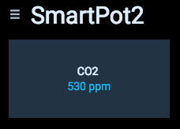
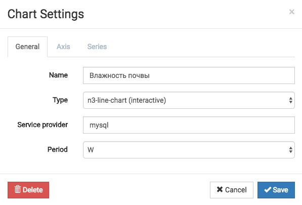

OpenHAB2: Экспорт данных в MySQL и построение графиков в HABPanel
В данной статье мы расскажем вам как добавить датчики в систему OpenHAB, настроить базу данных для эспорта, а также построить красивые графики по полученным данным.
Предположим, что у нас в комнате есть блок управления, который собирает данные с датчиков и отправляет их по протоколу MQTT на локальный сервер. Показания каждого датчика отправляются в отдельный MQTT канал, примерно вот так:
Датчик Dallas DS18b20 каждую минуту отправляет температуру в канал smartpot1/state/5/temp1. Датчик DHT-22 отправляет влажность воздуха в канал smartpot1/state/2/humi. Датчик влажности почвы отправляет каждые полчаса данные в канал smartpot1/state/a0. А также датчик уровня CO2 в воздухе отправляет свои данные в канал smartpot1/state/14/co2 каждую минуту.
OpenHAB подключается к нашему MQTT серверу и подписывается на нужные каналы данных. Каждый канал данных добавляется в OpenHAB как отдельный элемент (Item). С этого момента каждый раз, когда на сервер MQTT приходят новые данные с датчиков, они сразу же появляются в OpenHAB и записываются в базу данных MySQL.
В графическом интерфейсе HabPanel мы создаем виджет, который будет брать показания счетчиков из базы данных и строить по ним графики. Графики будут автоматически обновляться по мере поступления новых показаний в базу данных.
Добавляем датчики в виде Items для OpenHAB
Подключаемся по ssh или ftp к вашему Raspberry Pi (можно и к Orange Pi), на котором стоит OpenHAB, заходим в папку /etc/openhab2/items/ и открываем файл, в котором хранятся Items вашей системы, например, home.items или demo.items. Добавляем в него следующие строки:
Number SP1_Dallas1 "Температура [%.1f °C]" <temperature> {mqtt="<[localbroker:smartpot1/state/5/temp1:state:default]"}
Number SP1_Dht22_Humi1 "Влажность воздуха [%.1f %%]" <humidity> {mqtt="<[localbroker:smartpot1/state/2/humi:state:default]"}
Number SP1_Moist1 "Влажность почвы c датчика [%s]" <garden> {mqtt="<[localbroker:smartpot1/state/a0:state:default]"}
Number SP1_Moist1pesr "Влажность почвы в процентах [%.1f %%]" <garden>
Number SP1_CO2 "Концентрация CO2 [%s ppm]" <carbondioxide> {mqtt="<[localbroker:smartpot1/state/14/co2:state:default]"}
Для каждого датчика мы создаем элемент item типа Number. В скобках вида { ... } мы указываем через какой биндинг поступают данные, с какого сервера и по какому каналу. В нашем случае получается следующее: с помощью биндинга для протокола MQTT мы подключаемся к MQTT серверу localbroker, считываем данные из канала smartpot1/state/5/temp1 и присваиваем их нашему item.
Для всех MQTT датчиков используется один и тот же код, только меняется название item'а и имя канала, в котором мы смотрим данные с датчика. Также для краcивого отображения в графическом интерфейсе мы прописали дополнительные параметры в описание элементов. [%s] - выводит просто полученное значение. [%.1f %%] - выводит значение с одним знаком после запятой, а также добавляется % после значения. [%.1f °C] - в этом случае после значения температуры добаляется °C .
Хочу обратить ваше внимание на то, что названия брокеров, к которым мы подключаемся, могут быть разным. В нашем случае брокер называется "localbroker". Это значит, что мы в настройках предварительно добавили mqtt сервер, прописали его IP адрес, логин, пароль для подключения и назвали его localbroker. Дальше мы везде в системе обращаемся к нему по имени - localbroker. Если у вас большая сеть датчиков с несколькими MQTT серверами, то OpenHAB может работать сразу с несколькими серверами. Необходимо будет в конфиге указать все MQTT сервера и дальше обращаться к ним просто по именам. Скоро у нас на сайте появится отдельная статья про настройку связи между OpenHAB и MQTT сервером.
Для датчика влажности почвы мы используем два разных элемента - SP1_Moist1 и SP1_Moist1pesr. Дело в том, что датчик влажности почвы, подключенный на аналоговый вход платы управления, может работать по-разному. У одних производителей чем больше влажность почвы, тем выходное значение больше. У других наоборот: чем больше влажность почвы, тем выходное значение ниже. Мы будем принимать данные с датчика в том виде как они есть, а потом будем рассчитывать процент влажности исходя из минимума и максимума, и записывать его в SP1_Moist1pesr.
Сохраняем изменения в файле items и закрываем его.
Для каждого датчика мы добавили элемент в систему OpenHAB. Данные приходят и отображаются в системе, но они нигде не сохраняются. Чтобы проводить аналитику и строить графики мы установим базу данных и настроим связь сисстемы OpenHAB с этой базой.
Создание и подключение базы данных MySQL
1. Первым делом необходимо открыть OpenHAB в вашем браузере (ip адрес вашего сервера:8080, например, 192.168.1.10:8080), выбрать Paper UI, перейти в раздел Add-ons и выбрать вкладку Persistence. В поиске вводите MySQL и устанавливаете "MySQL Persistence". В списке будет 2 расширения для работы с MySQL, вам необходимо установить только MySQL Persistence. Если у вас очень долго устанавливается это дополниение - просто обновите страницу и вы увидите, что оно уже добавилось в систему.
2. Теперь необходимо установить саму базу данных. Снова подключаемся к нашему Raspberry Pi по SSH через консоль и вводим:
sudo apt-get install mysql-server
После того, как база установилась, вводим следующую команду, чтобы запустить сервер базы данных mysql с правами администратора:
sudo mysql -u root -p
Вы успешно вошли в программу mysql, которая позволяет работать с базами данных. Создадим базу данных для нашего OpenHAB:
CREATE DATABASE OpenHAB;
Здесь "OpenHAB" - это название самой базы данных, вы можете назвать ее по-другому, главное потом не забыть, как вы её назвали. Обратите внимание, что на конце всех команд для MySQL должен быть знак ";". Теперь создадим пользователя для работы с базой данных и назначим ему полные права для доступа к этой базе данных:
CREATE USER 'openhab'@'localhost' IDENTIFIED BY 'YOURPASSWORD';
GRANT ALL PRIVILEGES ON OpenHAB.* TO 'openhab'@'localhost';
Как вы видите, здесь мы создали пользователя с именем openhab и паролем YOURPASSWORD, дали ему полные права доступа к базе с названием OpenHAB. Вы можете поменять название и пароль на другие, эти данные будут использоваться системой только для подключения OpenHAB к базе.
Выходим из программы MySQL:
quit
Останавливаем и снова запускаем OpenHAB через консоль:
sudo service openhab2 stop
sudo service openhab2 start
3. После окончания загрузки системы у нас появится новый файл настроек. Через ssh или ftp заходим в папку /etc/openhab2/services, открываем файл mysql.cfg и вставляем в него следующий код:
# the database url like 'jdbc:mysql://<host>:<port>/<database>' (without quotes)
url=jdbc:mysql://127.0.0.1:3306/OpenHAB
# the database user
user=openhab
# the database password
password=YOURPASSWORD
Мы прописали название базы данных, которую только что создали, а также пользователя и пароль от нее. Сохраняем и закрываем. С этого момента OpenHAB подключен к базе данных и может записывать туда данные. Осталось только указать, как именно он это будет делать.
Предварительные настройки закончились, переходим непосредственно к экспорту данных в базу.
Настраиваем MySQL Persistence
По ssh или ftp заходим в папку /etc/openhab2/persistence/ и правим файл mysql.persist:
Strategies {
everyMinute : "0 * * * * ?"
every5Minutes : "0 */5 * * * ?"
everyHour : "0 0 * * * ?"
everyDay : "0 0 0 * * ?"
default = everyChange
}
Items {
SP1_Dallas1 : strategy = everyChange, everyDay, restoreOnStartup
SP1_Dht22_Humi1 : strategy = everyChange, everyDay, restoreOnStartup
SP1_Moist1pesr : strategy = everyChange, everyDay, restoreOnStartup
SP1_CO2 : strategy = everyChange, everyDay, restoreOnStartup
}
В первой части файла с помощью специальной разметки мы задаем стратегии добавления данных в базу, например, каждую минуту, кадый час, каждый день и так далее. По умолчанию используется стратегия everyChange - при каждом изменении.
Во второй части файла мы указываем наши Items и для каждого из них указываем стратегии добавелния в базу данных. Данные с датчиков будут добавляться в базу при каждом обновлении. restoreOnStartup - используется для восстановления значения переменной после перезагрузки OpenHAB. Кроме данных с датчиков тут можно хранить статусы выключателей. В этом случае после перезагрузки OpenHAB всегда будет точно знать в каком состоянии были выключатели. Сохраняем изменения и закрываем файл.
Каждый раз, когда вам неободимо будет, чтобы значения какого-то элемента хранилось в базе или и по ним строились графики - необходимо добавлять item в этот файл и прописывать ему стратегии экспорта.
Проверка работы экпорта данных
Первым делом необходимо по ssh или ftp зайти в файл /etc/openhab2/persistence/mysql.persist и убедиться, что у вас прописаны стратегии экспорта данных как описано выше.
Чтобы точно знать, записываются ли данные с датчиков в базу данных, нам необходимо войти в программу MySQL и посмотреть наличие данных в соответствующих таблицах. Для начала необходимо проверить работу сервиса MySQL. Подключаемся к вашему Pi по ssh и вводим:
/etc/init.d/mysql status
Если в ответном сообщении вы видите active (running), то все в порядке.
Теперь необходимо войти в MySQL под пользователем root, для этого набираем:
mysql -u root -p
И вводим пароль администратора от вашего Pi. Вы увидите приветственный экран программы MySQL:
Набираем следующую команду, чтобы увидеть список баз данных. Обратите внимание, что в конце каждой команды в MySQL должен стоять знак ";".
show databases;
В ответ терминал выдаст нам список доступных баз данных:
Переходим в ту базу данных, в которой у нас хранятся данные из OpenHAB:
use OpenHAB;
В ответ получим "Database changed". В MySQL данные с датчиков хранятся следующим образом: для каждого item из OpenHAB в базе данных создаётся таблица, в которой хранятся данные. Обычно в такой таблице всего две колонки: дата добавления и само значение переменной. Чтобы посмотреть список таблиц, вводим следующую команду:
show tables;
В ответ мы получаем список доступных таблиц:
Для каждого экпортируемого item у нас есть опеределенная таблица, но они скрыты порядковыми номерами. Чтобы понять, какая таблица соответствует нужному нам item, существует таблица "items", в которой расписаны соответствия таблиц и items. Чтобы ее посмотреть, вводим:
select * from Items;
В ответ получаем список таблиц + идентификаторов items:
Если экспорт настроен правильно, то в этом списке вы должны увидеть свои экспортируемые items. Если нужного items в списке нет, то стоит попробовать удалить и заново добавить нужную строчку в файл /etc/openhab2/persistence/mysql.persist, а также перезапустить mysql и openhab.
При экспорте в MySQL может возникнуть другая распостраненная проблема: таблица данных есть, но данные туда не записываются. Это может произойти, если вы несколько раз включали и выключали экспорт данных для какого-то item. Для устранения данной проблемы проверим записываются ли данные в таблицу:
select * from Item1;
Этой командой мы выводим все данные из таблицы Item1, в которой у нас хранятся показатели с датчика CO2. Выглядит это примерно вот так:
Если вы видите в таблице данные со свежими датами, значит вы все настроили правильно и можете переходить к построению графиков.
Если свежих данных в таблице нет, то необходимо сделать следующие действия. Удалить все данные из таблицы нашего item командой "delete from Item1;" после чего заново прописываем правила экпорта в файле /etc/openhab2/persistence/mysql.persist, а также перезапускаем mysql и openhab. Если это не поможет, то можно попробовать удалить всю таблицу из базы данных командой "DROP TABLE Item1;", а потом также заново настроить экпорт данных. Как только данные начнут поступать в базу данных - система сделает для них новую таблицу.
Строим графики в HabPanel
Все предварительные настройки закончены и мы можем переходить непосредственно к построению графиков. Одним из самых удобных способов создания и редактирования графиков в OpenHAB является графический интерфейс HabPanel. Открываем главную страницу OpenHAB2 и переходим в HabPanel.
Если у вас в списке графических интерфейсов нет HabPanel, то его можно поставить в Paper UI во вкладке User Interfaces в разделе Add-ons.
Заходим в HabPanel и в правом верхнем углу нажимаем на иконку настроек, выбираем "Add Dashboard" и во всплывающем окне вводим название нашего экрана с графиками. Я назвал его SmartPot2. Теперь нажимаем на иконку в верхнем левом углу и выбираем наш новый экран из списка.
Вы увидите экран для информационных виджетов. Все экраны в HabPanel могут находиться в режиме редактирования или в режиме работы. В режиме редактирования отображается несколько кнопок: список экранов, сохранить конфигурации, запустить экран в режим выполнения и кнопка добавления виджетов.
Для начала добавим несколько информационных виджетов, чтобы отслеживать текущие показатели с датчиков. Для этого нажимаем кнопку "Add Widget" и выбираем Dummy в списке. Появится текстовый виджет. Его размер можно менять растягивая его за уголок. Для настройки выводимых данных нажимаем на кнопку настроек на виджете и выбираем "Edit".
В открывшемся окне вводим название виджета, выбираем данные какого item будут выводиться, а также указываем формат данных (для датчика CO2 укажем %s ppm). Также мы могли бы указать размер шрифта и иконку, которая будет выводиться рядом с данными.
Нажимаем кнопку "Save", и новый виджет добавляется на экран. Для запуска экрана в рабочий режим нажимаем кнопку "Run". Мы получили виджет, который показывает нам концентрацию CO2 в воздухе. Он обновляется каждый раз, когда OpenHAB получает данные с датчика. Сама страница при этом не перезагружается.

Для возврата в режим редактирования наведите мышку на название экрана. Рядом с ним появится карандаш. Нажмите на него, и вы снова в режиме редактирования.
Добавьте виджеты для всех 4х датчиков. Для температуры воздуха можно использовать формат данных %.1f °C, для влажности воздуха и почвы %.1f %% чтобы выводить данные в процентах. Нажимаем кнопку "Run" и получаем удобную панель с показаниями всех датчиков.
Теперь, когда мы видим данные с датчиков, мы можем перейти непосредственно к построению графиков. Переходим в режим редактирования экрана и добавляем новый виджет типа Chart. Растягиваем его на всю ширину экрана и переходим в настройки. Для начала мы добавим график влажности почвы.

В первом окне мы вводим название графика, выбираем тип n3-line-chart (именно этот тип позволит нам строить красивые интерактивные графики), вводим сервис экспорта даных mysql и выбираем период, за который будут отображаться данные. Влажность почвы изменяется достаточно медленно, поэтому я выбрал неделю - W. Сохраняем изменнения, снова открываем настройки виджета и переходим во вкладку Axis.
В данной вкладке мы можем настраивать, какие оси будут отображаться по краям графика. Это очень удобно, потому что в HabPanel мы можем выводить данные с нескольких датчиков на один график. Например, влажность воздуха и температуру или 2-3 графика температуры.
Левую ось мы можем настроить как ось для влажности воздуха, а правую для тепературы. Если мы планируем выводить на графике только один параметр, то можно сделать оси одинаковыми, чтобы слева и справа от графика у нас была одинаковая шкала. Так мы и сделаем для графика влажности почвы. Для обоих осей мы укажем минимальное значение разное 0, а максимальное равное 100. Также отметим галочку "Include zero". Если этот параметр отмечен, то минимальным значением на шкале является 0. Если же этот параметр не отмечен, то минимальным значением на шкале будет минимальное значение графика за указанный период. Если параметр не отмечен и в течении недели влажность почвы не падала ниже 30%, то 30% будет минимальным значением на боковой шкале.
Переходим во вкладку Series:
В данной вкладке мы можем выбрать данные каких датчиков нам необходимо выводить на графике. Нажимаем на "+". Выбираем по какой оси будет строиться график, вводим название, выбираем для какого item будут выводиться данные на графике, выбираем цвет и тип графика в строчке Display. Line - рисовать линию обводки, Area - закрашивать область под графиком, Dots - рисовать на графике контрольные точки.
Галочка "Live update" отвечает за то, чтобы графики обновлялись без обновления страницы. Это очень удобно! Сохраняем и нажимаем кнопку "Run" вверху экрана с виджетами.
Когда у вас накопится достаточное количество данных в базе, график будет выглядеть примерно так. При наведении мышкой на определенную точку на графике, будет показано время и значение переменной.
ВНИМАНИЕ! Правила экспорта данных настроены так, что новые точки на графике появляются только при изменении показаний датчиков. Если датчик температуры лежит в комнате с постоянной температурой, то график не будет отображаться пока температура не изменится. Так же дела обстоят с временем обновления. Если у вас данные с датчика приходят раз в час, то пока не придут первые новые показатели - график будет пустым. Перед созданием первых графиков постарайтесь накопить данные в базе данных, настроить датчик так, чтобы данные с него приходили часто, а также чтобы была возможность быстро изменить показатели, которые замеряет датчик. Это поможет вам избежать части проблем, связанных с нерабочими графиками.
Дальше мы можем настроить график для датчика CO2. Для этого добавляем новый вижет и прописываем у него следующие параметры:
Когда накопится достаточно данных, мы получим следующий график, на котором отлично видно как начинает падать уровень CO2 при открытии окна.
Также на графике вы можете отображать, например, температуры в разных комнатах:
Кроме графиков нескольких переменных мы можем выводить пометки о событиях. Например, на графике CO2 мы можем выводить метку о том, когда было открыто или закрыто окно.
Предположим, что у нас есть датчик открытия окна. В системе OpenHAB в файле /etc/openhab2/items/home.items он прописан следующим образом:
Contact WindowsSensor1 "Окно кабинет" <window>
Этот элемент мы не может выводить на графике, но мы можем добавить переменную, которая будет равна 1 если мы открыли окно и 0 если мы закрыли окно. Для этого в файл home.items мы добавил еще один элемент:
Number WindowsSensorChart1 "Открытие каб [%s]" <window>
Для того, чтобы переменная принимала разные значения в зависимости от состояния окна, мы добавим новое правило в файл /etc/openhab2/rules/home.rules
rule "Windows Sensor Cabinet chart"
when
Item WindowsSensor1 changed
then
if(WindowsSensor1.state == OPEN ) {
sendCommand(WindowsSensorChart1, 1)
}
if(WindowsSensor1.state == CLOSED ) {
sendCommand(WindowsSensorChart1, 0)
}
end
Чтобы данная переменная выводилась на графике, нам необходимо прописать правило её экспорта в базу данных: заходим в файл /etc/openhab2/persistence/mysql.persist и добавляем строчку:
WindowsSensorChart1 : strategy = everyChange, everyDay, restoreOnStartup
Теперь информация об открытии и закрытии окна пишется в базу, и нам остается только вывести ее на графике. Заходим в HabPanel, переходим на экран SamrtPot2, включаем режим редактирования, открываем настройки графика CO2 и переходим во вкладку Axis.
Для переменной, отображающей состояние датчика открытия окна, мы добавляем дополнительную ось. Минимальное значение будет 0, максимальное 2. Вторая ось используется для отображения уровня CO2. Переходим во вкладку Series и добавляем на график еще одну переменную:
Сохраняем и нажимаем кнопку "Run" на нашем экране HabPanel. График начнет обновляться. Теперь каждый раз, когда вы будете открывать или закрывать окно на графике будет появляться дополнительная точка.
Теперь по синим точкам на графике отлично видно, в какой момет окно закрыли, и уровень CO2 начал расти, а в какой момент окно открыли, и уровень CO2 стал падать.
Правила очень удобно использовать для вывода событий на графиках. Этими событиями могут быть как открытия разных окон, так и включения каких-то приборов. Также правила удобно использовать, если нам необходимо разбить график на интервалы. Например, мы можем выводить дневной и ночной расход электроэнергии разными цветами.